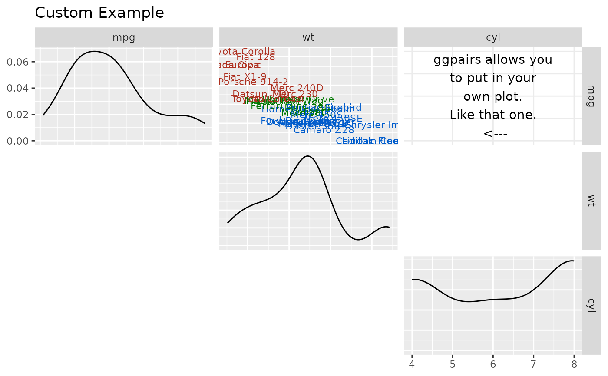

Function to place your own plot in the layout.
Examples
# Small function to display plots only if it's interactive
p_ <- GGally::print_if_interactive
custom_car <- ggpairs(mtcars[, c("mpg", "wt", "cyl")], upper = "blank", title = "Custom Example")
# ggplot example taken from example(geom_text)
plot <- ggplot2::ggplot(mtcars, ggplot2::aes(x = wt, y = mpg, label = rownames(mtcars)))
plot <- plot +
ggplot2::geom_text(ggplot2::aes(colour = factor(cyl)), size = 3) +
ggplot2::scale_colour_discrete(l = 40)
custom_car[1, 2] <- plot
personal_plot <- ggally_text(
"ggpairs allows you\nto put in your\nown plot.\nLike that one.\n <---"
)
custom_car[1, 3] <- personal_plot
# custom_car
# remove plots after creating a plot matrix
custom_car[2, 1] <- NULL
custom_car[3, 1] <- "blank" # the same as storing null
custom_car[3, 2] <- NULL
p_(custom_car)
